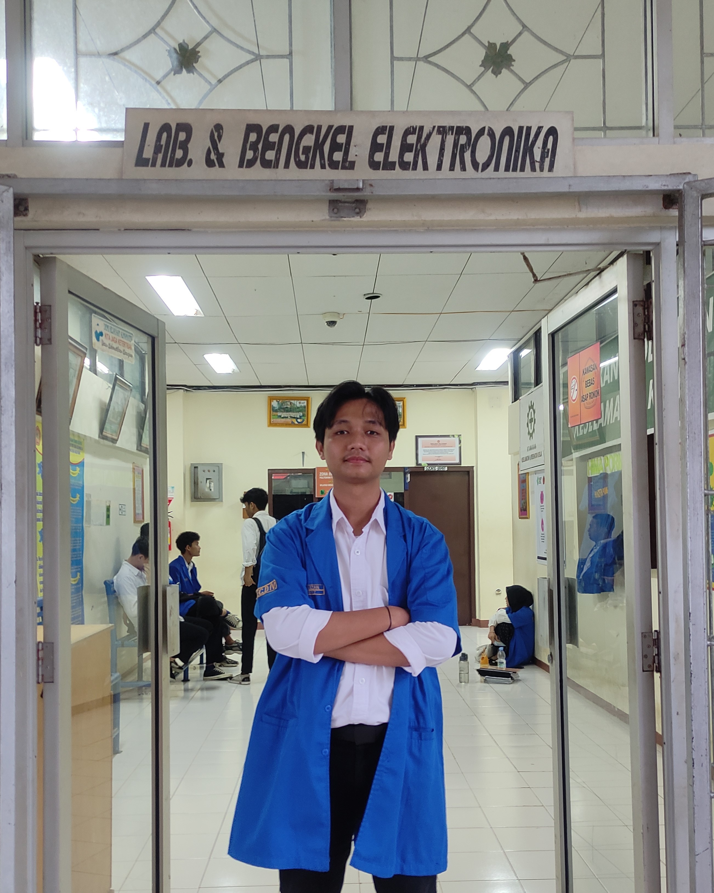

Hello, Teman - teman Semua!
Selamat datang dibiografi saya ya.
Perkenalkan Nama saya yusra fauzan, Seorang anak laki-laki yang bermimpi ingin membahagiakan ketiga orang tua dan ingin pergi ke swedia.
Saya lahir pada tanggal 15 september 2002, di Kota Padang, Provinsi sumatera Barat.
Orang tua saya bilang, Nama " Yusra " sendiri diambil dari alquran yaitu pada surah Al-insyirah ayat 5 dan 6 yang artinya " Kemudahan ". semoga kedepannya selalu diberi kemudahan.
Bicara soal berkenalan, tak lengkap rasanya jika tidak menyebutkan hobi, makanan kesukaan, Tempat favorite, Film kesukaan dan lainnya ya!
Baiklah, dimulai dari hobi, Saya hobi bermain futsal, posisi favorite si jadi kiper, bukan tanpa alasan karna memang udah gakuat lari heheh :v
Makanan favorite? Mie ayam jawabannya. Apalagi diamakan bareng papa,mama dan kakak ku yang tercinta.
Untuk tempat favorite, saya tidak terlalu milih-milih. yang penting sepi, hijau dan tidak ada keributan. " kamar sendiri "
" Klik gambar di atas untuk mengunjungi profil Instagram saya! "